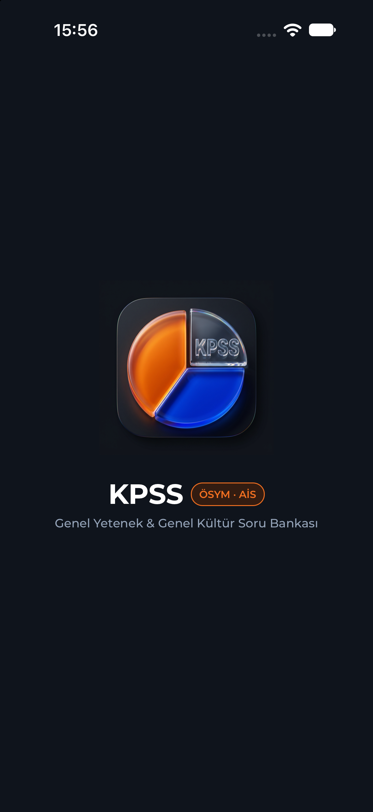
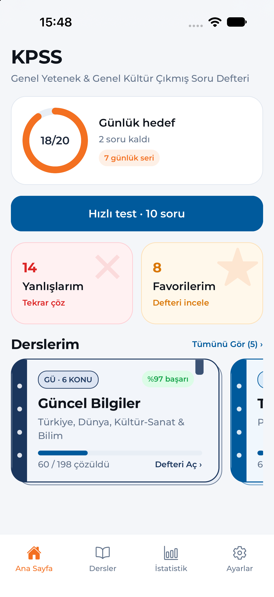
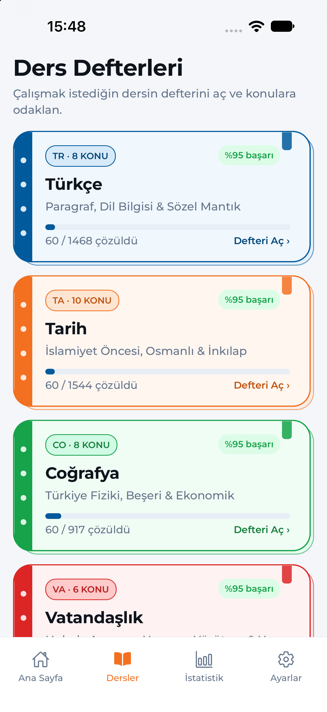
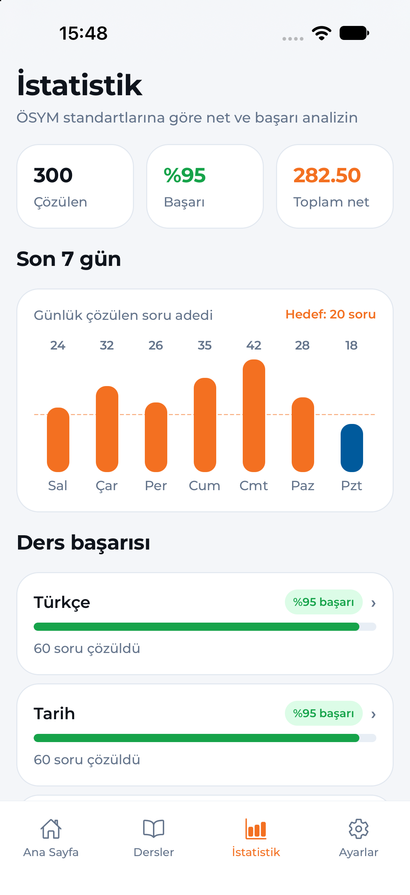

ÖSYM & AİS Kurumsal Tasarım
%100 Çevrimdışı · SQLite
Reklamsız & Üyeliksiz
KPSS Genel Yetenek & Genel Kültür Çıkmış Soru Defteri
Soğuk ve karmaşık test listeleri yerine çalışma masanızdaki renkli spiralli ders defterlerini cebinize taşıyın. 5 ders ve 38 alt konuda 4.594 doğrulanmış, tamamı çözümlü soruyu internet bağlantısına ihtiyaç duymadan çözün.
4.594
Çözümlü Soru
5 Ders
38 Alt Konu
%100
Çevrimdışı (Offline)
0 Veri
Tam Gizlilik
Günlük hedef
7 günlük seri


Spiralli Ders Defteri Metaforu
5 Ders, 38 Alt Konu, 4.594 Doğrulanmış Soru
Her ders; kendine özgü sırt rengi, 4 spiral deliği, üst sayfa ayracı (bookmark) ve katmanlı arka sayfa görünümüyle gerçek bir çalışma defteri olarak tasarlandı. Alt konularını görmek istediğiniz ders defterine tıklayın:
TR · 8 KONU
1.468 Soru
Türkçe
Paragraf, Dil Bilgisi & Sözel Mantık
AİS Mavisi (#005A9C)
Konuları Gör ›
TA · 10 KONU
1.544 Soru
Tarih
İslamiyet Öncesi, Osmanlı & İnkılap
ÖSYM Turuncusu (#F37021)
Konuları Gör ›
CO · 8 KONU
917 Soru
Coğrafya
Türkiye Fiziki, Beşeri & Ekonomik
Zümrüt Yeşili (#16A34A)
Konuları Gör ›
VA · 6 KONU
467 Soru
Vatandaşlık
Hukuk, Anayasa, Yasama, Yürütme & Yargı
Mercan Kırmızısı (#DC2626)
Konuları Gör ›
GÜ · 6 KONU
198 Soru
Güncel Bilgiler
Türkiye, Dünya, Kültür-Sanat & Bilim
Kurumsal Lacivert (#1B365D)
Konuları Gör ›
Türkçe Defteri — Alt Konu Dağılımı
8 Konu · 1.468 Soru
Odaklı KPSS Hazırlık Deneyimi
Sadece Soru Çözmeye Odaklanmanız İçin Tasarlandı
Mobil ekran ergonomisine uygun olarak şekillendirilmiş, gereksiz kalabalıktan uzak ve ÖSYM sınav ciddiyetini yansıtan çalışma araçları.
Akıllı Telafi Sistemi
Tekrar çöz · Eksiklerini kapat
Yanlışlarım Testi
Testlerde yanlış yaptığınız sorular otomatik olarak Yanlışlarım havuzuna eklenir. Tekrar testinde doğru çözdüğünüz anda listeden otomatik düşer.
Çalışma Notu Modu
Defteri incele · Not gibi oku
Favori Defterim (İnceleme Modu)
Yıldızladığınız sorular tekrar test olarak çözdürülmez; ders filtreli Favori Defterim ekranında yeşil vurgulu doğru cevabı ve çözüm açıklamasıyla incelenir.
Hızlı Test · 10 Soru
Çözülmemiş sorular öncelikli
10 Soruluk Odaklı Mini Testler
Genel karışık, ders bazlı veya alt konu bazlı 10 soruluk mini testlerle otobüste, molada veya çalışma masasında hiç çözmediğiniz sorular öncelikli olarak ilerleyin.
Montserrat Tipografi
Göz yormayan okuma hiyerarşisi
ÖSYM Kitapçık Düzeni
Paragraf gövdesi orta ağırlıkta, son cümledeki soru kökü otomatik kalın (Bold) ve altı çizili ifadeler gerçek sınav kitapçığı dizgisiyle sunulur.
4 Yanlış 1 Doğruyu Götürür
%0–39 Kırmızı · %40–69 Kehribar · %70+ Yeşil
Gerçek Net & 7 Günlük Seri
ÖSYM standartlarına göre gerçek netiniz (Doğru − Yanlış / 4), 7 günlük soru çözüm grafiğiniz ve en zayıf konularınız anlık olarak hesaplanır.
Yerel SQLite Veritabanı
İnternetsiz · Reklamsız · Hızlı
%100 Çevrimdışı & Sıfır Veri Takibi
Uçak modunda bile eksiksiz çalışır. Hesap açma zorunluluğu yoktur; tüm ilerlemeniz yalnızca kendi cihazınızda (SQLite) saklanır ve hiçbir sunucuya gönderilmez.
Canlı Uygulama Deneyimi
ÖSYM Kitapçık Düzeninde Örnek Soruyu Çözün
Uygulamadaki 4.594 sorunun tamamı konu etiketli, 5 şıklı ve detaylı çözüm açıklamalıdır. Aşağıdan bir ders seçip şıklara tıklayarak çözüm ekranını hemen deneyin:
Çözüm Açıklaması
Uygulama Vitrin Görselleri
iOS ve Android Ekran Görüntüleri
Aşağıdaki sekmeden iOS (iPhone) veya Android görünümünü seçebilir, görsellere tıklayarak tam ekran inceleyebilirsiniz.

YASAL BİLDİRİM ÖSYM Bağımsızlık Beyanı & Veri Güvenliği
Bağımsızlık Beyanı: Bu uygulama Ölçme, Seçme ve Yerleştirme Merkezi (ÖSYM) veya herhangi bir resmi devlet kurumu ile bağlantılı değildir, resmi kurumları temsil etmez. KPSS adayları için bağımsız bir sınava hazırlık ve çalışma aracı olarak geliştirilmiştir.
Gizlilik & Çevrimdışı Çalışma: Uygulama tamamen çevrimdışı (offline-first) çalışır; kişisel verilerinizi toplamaz, üçüncü taraflarla paylaşmaz ve tüm soru çözümü / istatistik verilerinizi yalnızca cihazınızın yerel veritabanında saklar. Detaylı bilgi için Gizlilik Politikası ve Kullanım Koşulları sayfalarını inceleyebilirsiniz.